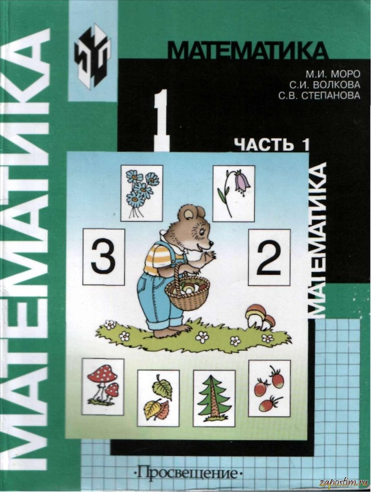
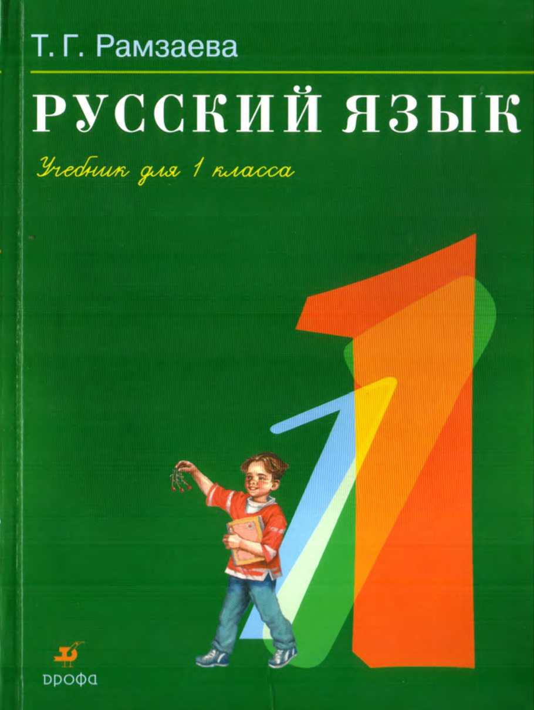
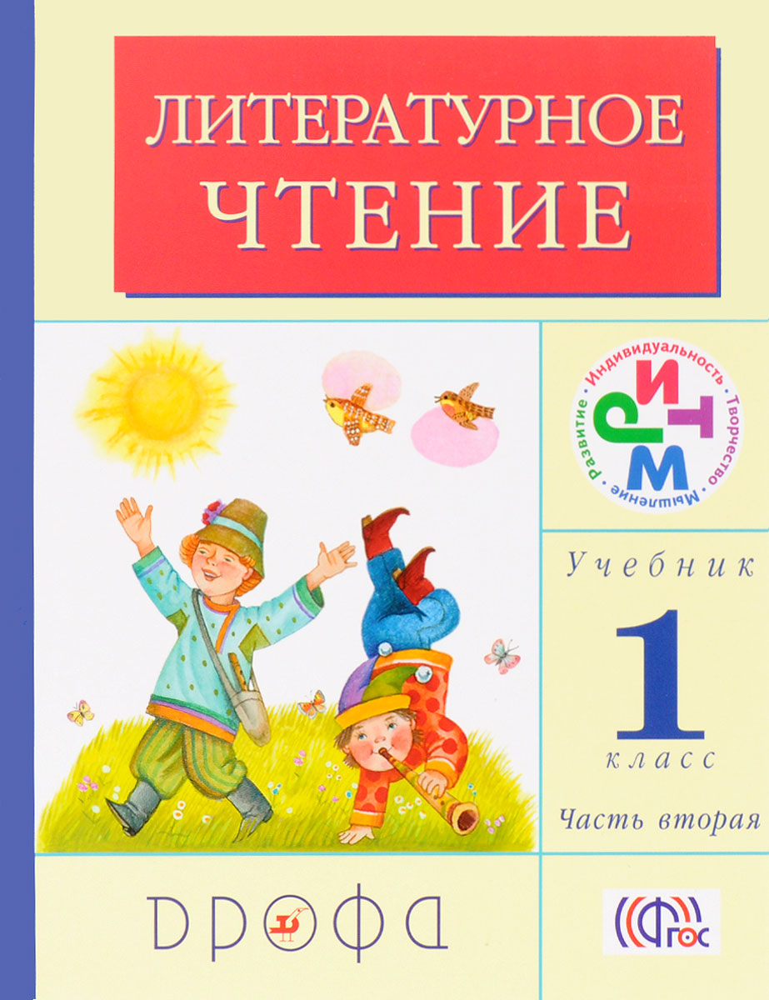
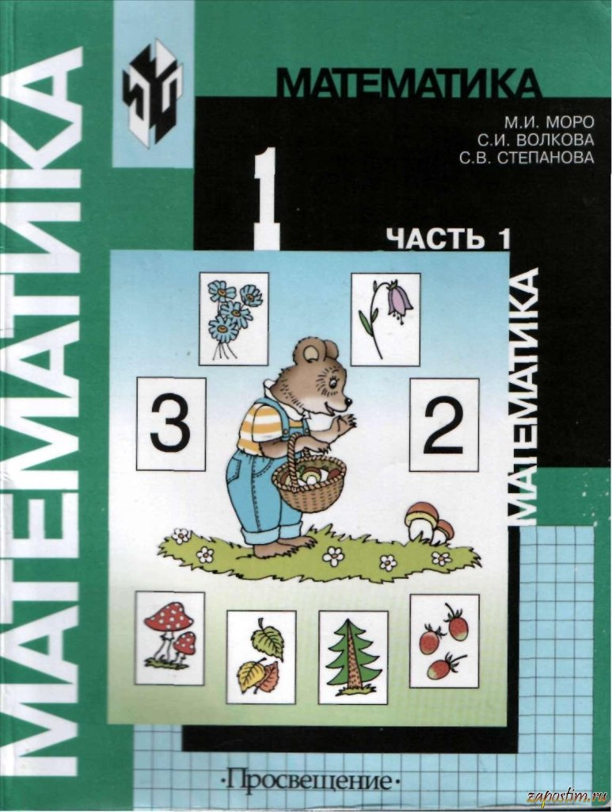
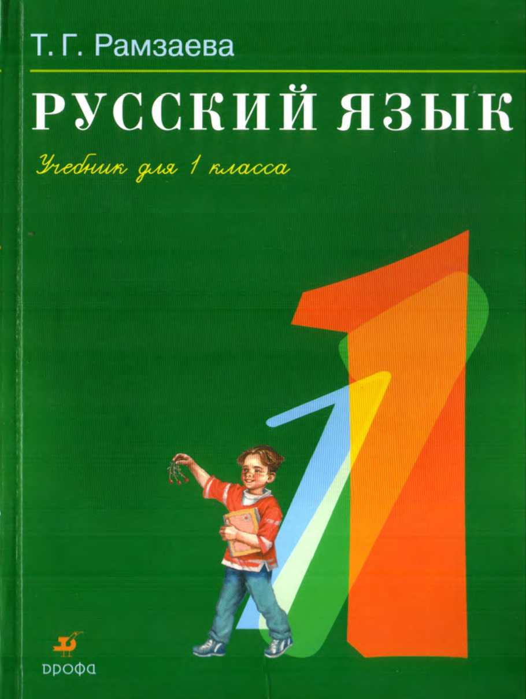
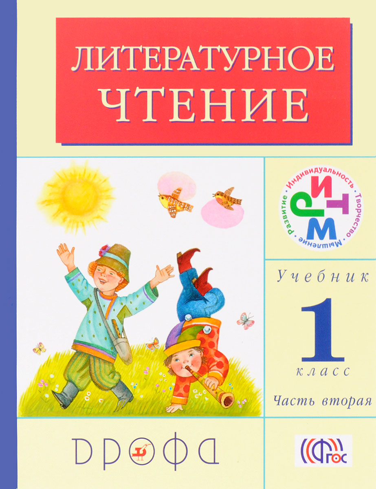

Репетиторство.Помощь учащимся.
| Главная | Предметы | Книги | Обратная связь |
|  | МАТЕМАТИКА |
|  | РУССКИЙ ЯЗЫК |
 | ЛИТЕРАТУРНОЕ ЧТЕНИЕ |

|
Репетиторство.Помощь учащимся. |
|||
| Главная | Предметы | Книги | Обратная связь |
|  | МАТЕМАТИКА |
|  | РУССКИЙ ЯЗЫК |
 | ЛИТЕРАТУРНОЕ ЧТЕНИЕ |